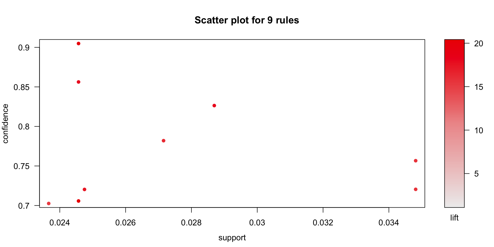

Data Science and Analytics is nowadays widely used in retail industry. With the advent of bid data tools and higher computing power, sophisticated algorithms can crunch huge volumes of transactional data to extract meaningful insights. Companies such as Kroger invest heavily to transform more than a hundred-year-old retail industry through analytics.
This project is an attempt to apply unsupervised learning algorithms on the transactional data to formulate strategies to improve the sales of the products.
This project deals with online retail store data taken from UCI Machine Learning Repository2. The data pertains to a UK-based registered online retail store’s transaction between 01/12/2010 and 09/12/2011. The retail store mostly sells different gift items to wholesalers around the globe.
The objective of the project is to apply statistical techniques such as clustering, association rules and collaborative filtering to come up with different business strategies that may lead to an increase in the sales of the products. Microsoft Excel, R Studio and Tableau are the major tools used in this project.
The data contains 541909 observations and 8 columns. Following is the variable dictionary
head(retail)## # A tibble: 6 x 8
## InvoiceNo StockCode Description Quantity InvoiceDate UnitPrice
## <chr> <chr> <chr> <dbl> <dttm> <dbl>
## 1 536365 85123A WHITE HANG… 6 2010-12-01 08:26:00 2.55
## 2 536365 71053 WHITE META… 6 2010-12-01 08:26:00 3.39
## 3 536365 84406B CREAM CUPI… 8 2010-12-01 08:26:00 2.75
## 4 536365 84029G KNITTED UN… 6 2010-12-01 08:26:00 3.39
## 5 536365 84029E RED WOOLLY… 6 2010-12-01 08:26:00 3.39
## 6 536365 22752 SET 7 BABU… 2 2010-12-01 08:26:00 7.65
## # … with 2 more variables: CustomerID <dbl>, Country <chr>colSums(is.na(retail))## InvoiceNo StockCode Description Quantity InvoiceDate UnitPrice
## 0 0 1454 0 0 0
## CustomerID Country
## 135080 0summary(retail$Quantity)## Min. 1st Qu. Median Mean 3rd Qu. Max.
## -80995.00 1.00 3.00 9.55 10.00 80995.00plot.ecdf(retail$Quantity)# Anything that has quantity greater than 10k and less than -10k should be removed
retail<-retail%>%
filter(Quantity<10000,Quantity>-10000)
#table(retail$Description)
## Unit Price
summary(retail$UnitPrice)## Min. 1st Qu. Median Mean 3rd Qu. Max.
## -11062.06 1.25 2.08 4.61 4.13 38970.00plot.ecdf(retail$UnitPrice)Upon investigation, it has been found that all the values where the unit price was exceptionally higher are the cancelled orders. These orders are removed from the data.
as.data.frame(retail[which(retail$UnitPrice>10000),c(1,2,3,4,6)])## InvoiceNo StockCode Description Quantity UnitPrice
## 1 C537630 AMAZONFEE AMAZON FEE -1 13541.33
## 2 537632 AMAZONFEE AMAZON FEE 1 13541.33
## 3 C537644 AMAZONFEE AMAZON FEE -1 13474.79
## 4 C537651 AMAZONFEE AMAZON FEE -1 13541.33
## 5 C540117 AMAZONFEE AMAZON FEE -1 16888.02
## 6 C540118 AMAZONFEE AMAZON FEE -1 16453.71
## 7 C556445 M Manual -1 38970.00
## 8 A563185 B Adjust bad debt 1 11062.06
## 9 C580604 AMAZONFEE AMAZON FEE -1 11586.50
## 10 C580605 AMAZONFEE AMAZON FEE -1 17836.46## Removing cancelled orders
retail<-retail[!startsWith(retail$InvoiceNo,'C'),]### Date
ts<-retail%>%
group_by(as.Date(InvoiceDate))%>%
summarise(orders=n())
colnames(ts)<-c('Day','Orders')
ggplot(data = ts,aes(x = Day,y = Orders))+geom_line()ts2<-retail%>%
group_by(as.Date(InvoiceDate))%>%
summarise(revenue=sum(Quantity*UnitPrice))
colnames(ts2)<-c('Day','Revenue')
ggplot(data = ts2,aes(x = Day,y = Revenue))+geom_line()Customer segmentation is a way of clustering the customers in different groups based on their buying behaviour, demographics, lines of business, location etc. enabling the organization to share relevant communication to each customer segment. Segmentation when coupled with demographic data, also helps organizations define user personas that can be used to explore new geographies, businesses or products to introduce in the market.
RFM segmentation is a widely used method that is based on purchase pattern of the customers. RFM stands for Recency, Frequency and Monetary.
Based on the above metrics, the data is aggregated for every customer. This aggregated data is used for segmentation. Also note that the observations with missing CustomerID values are not considered for segmentation.
For calculation of Recency, it has been assumed that the segmentation was done in early 2012 and an arbitrary date of 2nd Jan 2012 is assumed to calculate recency. The recency metric will measure how many days have passed since the last order was made until 2nd Jan. Deciding optimum number of clusters is one of the major questions that rise during customer segmentation. For the purpose of deciding optimum number of clusters, following 3 methods are used.
aggregated<-retail%>%
filter(!is.na(CustomerID))%>%
group_by(CustomerID)%>%
summarise(frequency=n(),latest=max(InvoiceDate),monetory=mean(UnitPrice*Quantity))
aggregated<-as.data.frame(aggregated)
head(aggregated)## CustomerID frequency latest monetory
## 1 12347 182 2011-12-07 15:52:00 23.68132
## 2 12348 31 2011-09-25 13:13:00 57.97548
## 3 12349 73 2011-11-21 09:51:00 24.07603
## 4 12350 17 2011-02-02 16:01:00 19.67059
## 5 12352 85 2011-11-03 14:37:00 29.48282
## 6 12353 4 2011-05-19 17:47:00 22.25000we need to express recency in the number of days since the last purchase has been made.
#The latest date is 9th Dec 2011.
max(aggregated$latest)## [1] "2011-12-09 12:50:00 UTC"# We can assume that this analysis was done in early 2012 and proceed accordingly.
today<-as.POSIXct("2012-01-02 00:00:00 UTC")
aggregated<-aggregated%>%
mutate(recency=today-latest)
aggregated$latest<-NULL
aggregated$recency<-as.numeric(aggregated$recency)
#head(aggregated)
summary(aggregated)## CustomerID frequency monetory recency
## Min. :12347 Min. : 1.00 Min. : 1.45 Min. : 23.80
## 1st Qu.:13814 1st Qu.: 17.00 1st Qu.: 12.34 1st Qu.: 40.88
## Median :15300 Median : 41.00 Median : 17.71 Median : 73.89
## Mean :15301 Mean : 91.75 Mean : 37.59 Mean :115.84
## 3rd Qu.:16779 3rd Qu.: 100.00 3rd Qu.: 24.84 3rd Qu.:165.74
## Max. :18287 Max. :7847.00 Max. :13305.50 Max. :396.92There are observations with negative monetory value. These could be because of some errors. We can remove those observations and scale data.
aggregated<-aggregated%>%
filter(monetory>=0)
test<-scale(aggregated[,-1])For deciding optimum number of clusters, we use following three approaches and decide the best option.
Silhouette Distance Method, Elbow curve method and Gap Statistic
# 1. Silhouette method
fviz_nbclust(test, kmeans, method = "silhouette")+
labs(subtitle = "Silhouette Distance Method")# 2. Elbow method
fviz_nbclust(test, kmeans, method = "wss") +
geom_vline(xintercept = 3, linetype = 2)+
labs(subtitle = "Elbow Curve Method")# 3. Gap statistic
set.seed(22334455)
fviz_nbclust(test, kmeans, nstart = 25, method = "gap_stat", nboot =100)+
labs(subtitle = "Gap Statistic Method")We will create 3 clusters of the data.
test<-aggregated
test$frequency<-scale(test$frequency)
test$recency<-scale(test$recency)
test$monetory<-scale(test$monetory)
#head(test)
km<-kmeans(test[,-1],centers = 3,iter.max = 30)
test$segment<-km$cluster
## Writing back for dashboard
aggregated<-sqldf('select aggregated.*,test.segment from aggregated inner join test
on aggregated.CustomerID=test.CustomerID')
as.data.frame(aggregated%>%
group_by(segment)%>%
summarise(customers=n(),freq=mean(frequency),rec=mean(recency),money=mean(monetory)))## segment customers freq rec money
## 1 1 3261 105.79485 64.85538 32.37201
## 2 2 1071 27.72176 271.33926 41.18455
## 3 3 5 4646.80000 61.32347 2671.22904Market basket analysis is a statistical technique that is used to find association among the products that are sold to come up with baskets of similar products. Following are the major concepts on which market basket analysis is based on.
\[support = \frac{Transactions \ in\ which\ product\ was\ purchased }{Total \ Transactions}\]
\[Confidence = \frac{Support (A,B) }{Support (B)}\]
\[Lift = \frac{Support (A,B) }{Support(A)*Support (B)}\]
For the purpose of this analysis, we have used apriori method from arules8 package in R. Deciding minimum support and confidence values is a strategic decision made based on the number of rules the organization wants to create and the total number of distinct products that are sold. For the purpose of this project, we have used minimum support as 0.02 and minimum confidence of 0.7. Meaning that, for any rule A->B we define, we will be 70% confident that any customer buying product A will also buy product B.
### Association Rules
test<-retail%>%group_by(InvoiceNo,Description)%>%summarise(Value=1)
test<-test[!startsWith(test$InvoiceNo,'C'),]
#head(test)
test<-test%>%spread(Description,Value,fill = 0)
test<-as.data.frame(test)
#head(test)
#str(test)
#rowSums(test[,-1])
#colSums(is.na(test))
### Association Rules
Mat<-as.matrix(test[-1,-1])
dim(Mat)## [1] 22060 4195class(Mat[2,3])## [1] "numeric"## Takes forever to run!!
#buckets <- eclat (Mat[,-1], parameter = list(supp = 0.0015, minlen = 2))
#inspect(buckets)
### 9 rules 0.02 conf=0.7 based on testing done, creating transaction matrix
s<-as(Mat,"transactions")
rules <- apriori(s, parameter = list(supp = 0.02,conf = 0.7))## Apriori
##
## Parameter specification:
## confidence minval smax arem aval originalSupport maxtime support minlen
## 0.7 0.1 1 none FALSE TRUE 5 0.02 1
## maxlen target ext
## 10 rules FALSE
##
## Algorithmic control:
## filter tree heap memopt load sort verbose
## 0.1 TRUE TRUE FALSE TRUE 2 TRUE
##
## Absolute minimum support count: 441
##
## set item appearances ...[0 item(s)] done [0.00s].
## set transactions ...[4195 item(s), 22060 transaction(s)] done [0.06s].
## sorting and recoding items ... [247 item(s)] done [0.01s].
## creating transaction tree ... done [0.01s].
## checking subsets of size 1 2 3 done [0.01s].
## writing ... [9 rule(s)] done [0.00s].
## creating S4 object ... done [0.01s].inspect(rules)## lhs rhs support confidence lift count
## [1] {PINK REGENCY TEACUP AND SAUCER} => {ROSES REGENCY TEACUP AND SAUCER} 0.02715322 0.7819843 16.18253 599
## [2] {PINK REGENCY TEACUP AND SAUCER} => {GREEN REGENCY TEACUP AND SAUCER} 0.02869447 0.8263708 17.96033 633
## [3] {GARDENERS KNEELING PAD CUP OF TEA} => {GARDENERS KNEELING PAD KEEP CALM} 0.02475068 0.7203166 17.40436 546
## [4] {CHARLOTTE BAG PINK POLKADOT} => {RED RETROSPOT CHARLOTTE BAG} 0.02366274 0.7025572 14.98879 522
## [5] {ROSES REGENCY TEACUP AND SAUCER} => {GREEN REGENCY TEACUP AND SAUCER} 0.03481414 0.7204503 15.65826 768
## [6] {GREEN REGENCY TEACUP AND SAUCER} => {ROSES REGENCY TEACUP AND SAUCER} 0.03481414 0.7566502 15.65826 768
## [7] {PINK REGENCY TEACUP AND SAUCER,
## ROSES REGENCY TEACUP AND SAUCER} => {GREEN REGENCY TEACUP AND SAUCER} 0.02456936 0.9048414 19.66581 542
## [8] {GREEN REGENCY TEACUP AND SAUCER,
## PINK REGENCY TEACUP AND SAUCER} => {ROSES REGENCY TEACUP AND SAUCER} 0.02456936 0.8562401 17.71919 542
## [9] {GREEN REGENCY TEACUP AND SAUCER,
## ROSES REGENCY TEACUP AND SAUCER} => {PINK REGENCY TEACUP AND SAUCER} 0.02456936 0.7057292 20.32426 542Support and confidence of the 9 rules that have been identified are plotted in the below graph. The intensity of the red colour represents the lift of the rule. Higher the lift darker the colour. Minimum lift and support for the rules is a business decision and is dependent on SKU diversity, transaction volume etc. For a retail giant like Walmart or Amazon, lower support rules can also be useful.
plot(rules) Below is the visualization of the rules that have been identified. For the purpose of readability, the complete description of the product is shown in the below graph. In the below graph, size and the colour of the circles represent support and lift respectively.
plot(rules, method="graph")